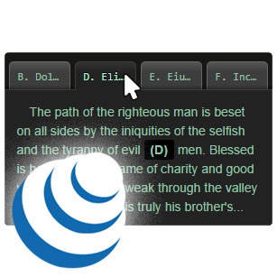

This is another plugin to manage some tabs.
By default this plugin propose something very basic, just like this :
jQueryUI - tabs.
But the amazing here is if you also include the plugin
jquery-dragndrop
in your HTML, you'll be able to reorder the tabs as you want with your mouse.
This plugin need 3 or 4 files :
Here, I have also included the jquery-dragndrop plugin,
so we can move the tabs.
Open the debug-console to watch the events in action.
Look, just A because I don't be givin' no man a foot massage don't make it right for Marsellus to throw Antwone into a glass motherfuckin' house, fuckin' up the way the nigger talks. Motherfucker do that shit to me, he better paralyze my ass, 'cause I'll kill the motherfucker, know what I'm sayin'?
You think water moves fast? You should see ice. It moves like it has a mind. Like it knows it killed the world once and got a taste for murder. After the avalanche, B it took us a week to climb out. Now, I don't know exactly when we turned on each other, but I know that seven of us survived the slide... and only five made it out. Now we took an oath, that I'm breaking now. We said we'd say it was the snow that killed the other two, but it wasn't. Nature is lethal but it doesn't hold a candle to man.
Your bones don't break, mine do. That's clear. Your cells react to bacteria and viruses differently than mine. You don't get sick, I do. That's also clear. But for some reason, you and I react the exact same way to water. We swallow it too fast, we choke. C We get some in our lungs, we drown. However unreal it may seem, we are connected, you and I. We're on the same curve, just on opposite ends.
The path of the righteous man is beset on all sides by the iniquities of the selfish and the tyranny of evil D men. Blessed is he who, in the name of charity and good will, shepherds the weak through the valley of darkness, for he is truly his brother's keeper and the finder of lost children. And I will strike down upon thee with great vengeance and furious anger those who would attempt to poison and destroy My brothers. And you will know My name is the Lord when I lay My vengeance upon thee.
Now that we know who you are, I know who I am. I'm not a mistake! It all makes sense! In a comic, you know how you can tell who the arch-villain's going to be? He's the exact opposite of the hero. And most times they're friends, like E you and me! I should've known way back when... You know why, David? Because of the kids. They called me Mr Glass.
Normally, both your asses would be dead as fucking fried chicken, but you happen to pull this shit while I'm in a transitional period so I F don't wanna kill you, I wanna help you. But I can't give you this case, it don't belong to me. Besides, I've already been through too much shit this morning over this case to hand it over to your dumb ass.